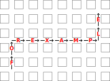

How the Other Half Lives
NOTE: In the English department, all puzzles have two answers. You can submit each answer independently.
For this puzzle you will need two players. To set up, walk to a small pond and sit on opposite sides, with one player on the east and one on the west. The players must then simultaneously follow the instructions below. After each numbered step, wait until the other player is done before beginning the next one.
Seven of the instructions feature a prize alert, along with a condition. These instructions should only be followed by the player who meets the condition.
Some instructions, including the prize alerts, will involve manipulating the prize board, which features photographs of items in positions numbered 1-7, arranged as follows:
![A prize board with 7 items, numbered 1 through 7, with numbers increasing from left to right. The items are: a blue wool knitted long-sleeve garment; a tool for gripping and turning nuts and bolts, with a circular head on each end that has a square portion cut out for gripping; a plant with large leaves, which is growing a yellow fruit with many kernels; a long oval purple fruit with a green stem on top; a red paper container whose back is taller than its front, with yellow rectangle objects inside; a diagram of 3 people in a box, with one up and one down arrow above the box; a handheld gadget with a lens, a handle, and a button, which is emitting light from its lens.](../static/puzzle_resources/how-the-other-half-lives/1.svg)
To claim an item, write your name on its photograph, along with the score associated with that item (as described in the instruction). When you are told to rearrange items on the prize board, move the photographs as instructed.
- Prepare yourself a nice picnic of five muffins, two biscuits, and a pint of lemonade.
- Look around and enjoy the environment. Hey, someone else is here too! Wave at them across the pond.
- Challenge the other person to an eating contest consisting of three rounds:
- Start by eating all of the baked items that are more likely to be served with breakfast meats. Eat them at a rate of 3 seconds per item.
- Then, drink the lemonade. You can chug non-carbonated beverages at a speed of 8 fluid ounces per second, and carbonated beverages at a speed of 5 fluid ounces per second.
- Finally, eat the sweeter baked items. Since you’re pretty full at this point, you can only eat them at a rate of 4 seconds per item.
- Prize alert! If you finished first, claim the prize in the position equal to the number of seconds you spent drinking lemonade. It’s worth one point for every second between when you finished eating and when your opponent finished eating. Swap that item with the item to its left on the prize board.
- Hey, that was fun! The other player does things a little differently, but they seem nice enough. Maybe you should
have a rematch with them. Find a piece of paper and write the following message on it:
Dearest adversary,
Would you like to play more games? If so, meet me at the north side of the pond on __/__/2023.
In the first blank, write the number of seconds you spent chugging lemonade plus three. In the second blank, write the number of seconds you spent eating biscuits plus one. - Fold the paper into a plane and throw it across the pond to the other player.
- Oh, your opponent also sent you a message. Retrieve their paper plane and open it.
- Okay, great, they speak English too! But the date they proposed is a few months away from yours. You’ll have to meet
somewhere in the middle. Write a new message:
Hello again,
That date doesn’t work for me. How about Tuesday, __/__/2023 instead?
You don’t want to compromise much, so just take your original date and move it two days in the direction of their proposal. - Send the new message to your opponent in another fabulous paper plane.
- Unfold the plane your opponent just sent you. Sneer at its shoddy craftsmanship.
- Oh, fantastic! They suggested the same date as you. Meet them at the north side of the pond on that date.
- Prize alert! If you arrived first, sulk in displeasure, and then wait for the other player to show up. When they finally do, help yourself to the prize that begins with the same letter as the month in which they arrived. It’s worth points equal to the day when they arrived.
- Now that you’re both here, it’s time to race! You’ll be competing in three races. Every time you win, you get to modify the prize board: if you won race number n, swap the position of the prize you claimed earlier with the prize n spaces to its right.
- Race #1: You and your opponent must drive around a two-lane road, beginning at your meetup point and heading west, until you complete one lap around the pond. You must drive at the exact same speed as your competitor.
- Race #2: You and your opponent must “run” along a race track, but with your limbs in an inconvenient configuration: the extremity you normally use to pass a football must always be in contact with the one-syllable body part that rhymes with the letter “Z”.
- Race #3: You and your opponent must run through identical, separate hallways. Your hallway is filled with bees, and they’re pissed!
- Now, convert your results from these three races into a binary number: use 1 for each race where you finished first, and 0 for each race where you finished second. Read them in order to get a number between 0 and 7, and shout that number out loud.
- Prize alert! If you just shouted a bigger number than your opponent, claim the prize in the position corresponding to the number you shouted. It’s worth points equal to the number that your opponent shouted.
- Let’s play some board games instead. Go find a Monopoly board and a Bingo board for yourself. Do not share these with your opponent. They should buy their own copies.
- When selecting a Bingo board, read ahead in the instructions and figure out which numbers will be drawn in steps 24-26. Find a board containing those numbers.
- Place a token on the Monopoly board on the only space named after a district.
- Orient the board so that Go is in the southeast corner. On a sticky note, write down which side of the board (north, south, east, or west) currently contains your token. Save this for later.
- Now play a game of Bingo-Monopoly. Draw numbers as specified in the next few steps, and then place them on your Bingo board. When you place a number in the nth column, move your token forward n spaces. For example, if you draw a 5, move forward 1 space, and if you draw a 17, move forward 2 spaces.
- Draw a number equal to the total time (in seconds) that the faster player took to eat all of their biscuits, muffins, and lemonade.
- Think about the month when the earlier player arrived for the racing competition. Draw a number equal to the total number of days in that month.
- Draw the number 42. Your token and your opponent’s token should now occupy spaces that begin with the same letter.
- Count up the total number of letters in the four spaces that your token has visited.
- Prize alert! If your total is larger than your opponent’s, claim the prize in the position equal to the square root of the only perfect square that shows up in the middle column of your Bingo board. It’s worth points equal to the difference between your total and your opponent’s total.
- On the prize board, swap the item that has the shortest name with the item that has the alphabetically last name.
- It’s time to head to Scavenger Hunt Tower. First, get on a bus and take it to the nearby city. Get off at a spot downtown, where the streets form a nice regular grid.
- Hail a cab and get in.
- Surprise! You’re on Cash Cab! Here are the rules:
- You get to decide the initial direction of the cab.
- The tower is 3 blocks south and 3 blocks east of where you got in the cab.
- The driver is going to ask you a series of questions. You must answer each of them correctly.
- After you answer each question, the driver will drive one block for each letter in your answer. At each “L” or “R” in the answer, the driver will turn left or right before driving that block. For example, here’s the driver’s path along the answers “FOR” and “EXAMPLE” if its initial direction is north:
 - Give the sticky note from step 22 to the driver. That’s the initial direction of the cab.
- Answer the following questions:
- In what S-city does The Office take place?
- What six-letter tree appears in the title of the fourth Anne of Green Gables book?
- What is the name of Dennis the Menace's dog?
- What punctuation mark is often used to end a declarative sentence?
- What is the last name of the host of this show?
- Get out of the cab. You’re now on the same street as your destination—in fact, you passed it during the final question! Turn around and walk the rest of the way there.
- Prize alert! If you had to walk fewer blocks than your opponent, claim the prize in the position corresponding to the number of blocks you had to walk. It’s worth points equal to how much farther (in blocks) your opponent had to walk.
- Welcome to Scavenger Hunt Tower! Begin on the ground floor. Each floor of this building (besides the ground floor) contains a coin, and one of them is the lucky coin. In the next few steps, every time you stop at a floor, pick up the coin on that floor if it’s still available.
- Go up 2n flights of stairs, where n is the number of deaths of Evelyn Hardcastle in the title of a novel.
- Go down 10 flights of stairs.
- Go up n flights of stairs, where n is the number of races you lost in steps 14-16.
- Text your opponent the number of the floor you’re currently on.
- Go up n flights of stairs, where n is the number your opponent just texted you.
- Go down n flights of stairs, where n is the number of letters in the name of the element with atomic number equal to the floor you’re currently on.
- Hey, your opponent is here! This is the first time you’ve seen each other since leaving the ground floor.
- Anyway, fun fact: the lucky coin was on this floor.
- Prize alert! If you have the lucky coin, you get a prize! Let n be the difference between the number of coins you found and the number of coins your opponent found. Claim the prize in position n. It’s worth n points.
- Swap two of your prizes so that all of your claimed prizes are in alphabetical order.
- Alright, one last contest: manual labor. Leave the tower and find a plot of land with a large quantity of dirt, along with enough space for you and your opponent to move it around.
- Make yourself a nice big mound, containing 1080 pounds of dirt for every point you’ve earned so far.
- Add another 100 pounds of dirt for every space you moved your Monopoly token during steps 24-26.
- Steal n tons of dirt from your opponent’s mound and add it to your own, where n is the number they texted you in step 41. (They might not have enough dirt for you to steal it all at once, so you can take one ton at a time while they’re following their own instructions.)
- Your mound now contains an integer number of tons of dirt! Shout that number.
- Prize alert! If you just shouted the number equal to the current position of the remaining unclaimed prize, claim it. It’s worth points equal to the number your opponent shouted. Celebrate by reversing the order of the prize board.
- Each prize has now been claimed. It’s time to cheat for a few more points! Find the rightmost prize that your opponent won. Claim a copy of it for yourself as well, but with a different score: assign to it the number of points you earned for your leftmost prize.
- Find the second-to-rightmost prize that you don’t currently have, and claim that as well. This time, use the same score that your opponent got for that prize.
- Finally, for each prize you’ve won, index your score for that prize into the name of the prize. From left to right, those letters spell the answer!